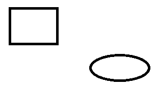

import os import sys import module_CommonImagesSet keyDown(Key.WIN) keyUp(Key.WIN) type("paint" + Key.ENTER) match = find(module_CommonImagesSet.paintShapePanel) # finds the paintShapePanel # click on the rectangle click(match.getTarget().offset(-9, -16)) # Draw a rectangle dragDrop(match.getTarget().offset(-418, 89), match.getTarget().offset(-325, 159)) # Select ellipse click(match.getTarget().offset(-29, -17)) # click on the ellipse # Draw an ellipse dragDrop(match.getTarget().offset(-260, 181), match.getTarget().offset(-145, 231)) # Select rectangle again to get out of the workflow. click(match.getTarget().offset(-9, -16)) # Now check that if it was correctly drawn and mark the test passed or failed accordingly if exists (): Debug.log("TEST PASSED!!") else: Debug.log("TEST FAILED!!")